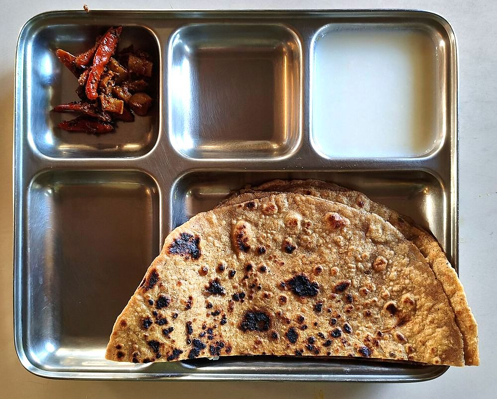

Prep30 min
Cook25 min
Active55 min
Plus20 min resting
Serves6
Difficultymoderate
Contains: milk, gluten
Checked against the ingredient list for ten allergens: milk, egg, fish, crustaceans, tree nuts, peanuts, sesame, mustard, soy and gluten. Brands vary, so read the label on anything new to you.
Ingredients
Quantities for 6.
- 400g Atta
- 500g, grated Radishwhite mooli; the water in it is the whole problem
- 3, chopped Green Chilli
- 1 tbsp, grated Ginger
- 1 tsp Ajwain
- a handful Coriander Leaves
- 1 tsp Amchur
- 6 tbsp Ghee
- 250ml Water
- to taste Salt
Cookware
tawa
Before you start
- The reason mooli parathas tear is water. Salt the grated radish, wait, and squeeze it hard. Squeeze it again.
- Use the squeezed radish water to knead the dough. Nothing is wasted and it tastes better.
Method
- Grate the radish, mix with 1 tsp salt and leave 20 minutes. Then squeeze it out in a cloth, hard.You should get a surprising amount of liquid. Keep it for the dough.
- Knead the flour with the radish water, topping up with plain water, into a soft dough. Rest 20 minutes.
- Mix the squeezed radish with the green chilli, ginger, ajwain, coriander and amchur. Do not add salt again.
- Roll a small disc, place a ball of filling in the centre, gather the edges over and pinch shut.
- Roll out gently to 16cm, dusting well.If it starts to tear, stop and patch with a little dry flour rather than pressing on.
- Cook on a hot tawa with ghee, 2 minutes a side, pressing the edges down.
Storage
Best fresh. They keep a day wrapped in a cloth; reheat on a dry tawa.
Nutrition Medium estimate
Low protein: 7 g a serving, 8% of the calories
| Per serving169 g | Per 100 g | |
|---|---|---|
| Calories | 355 kcal | 210 kcal |
| Protein | 7.2 g | 4 g |
| Carbohydrate | 54.4 g | 32 g |
| of which sugars | 3.0 g | 2 g |
| Fibre | 10.5 g | 6 g |
| Fat | 14.2 g | 8 g |
| of which saturated | 8.3 g | 5 g |
| of which unsaturated | 5.2 g | 3 g |
Ingredients given to taste count as zero, so the real figures run a little higher. Nearest database match used for amchur. Estimated from raw ingredients using USDA FoodData Central.
Times, yields, allergens and nutrition are guidance. Use your own judgement on doneness and on storing. More in About.